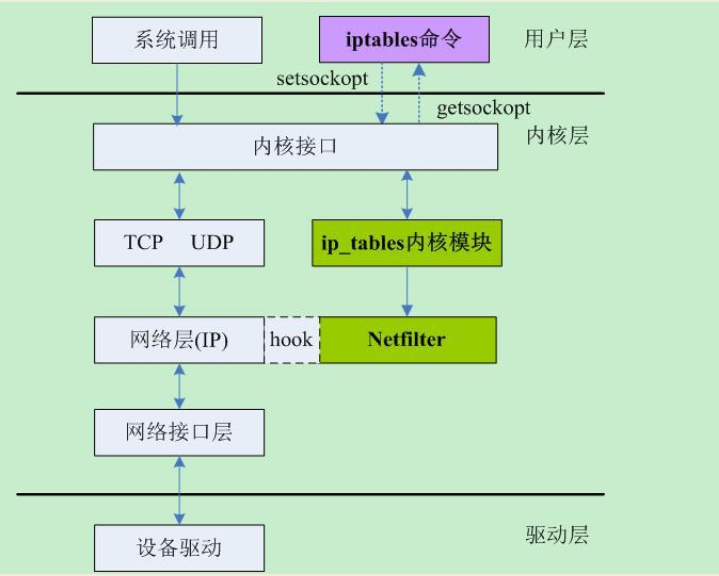
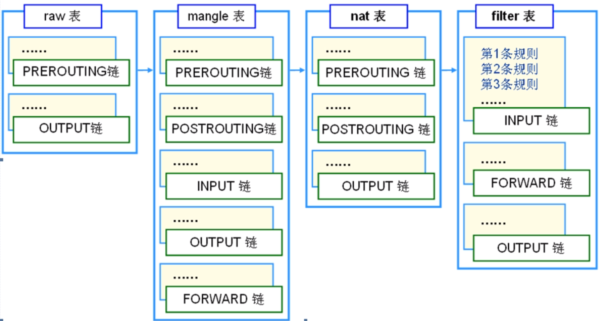

iptables
一、iptables概述
1.Netfilter/iptables
- Netfilter是内核的一部分，由一些信息包过滤表组成，这些表包含内核用来控制信息包过滤处理的规则集。
- iptables是用户管理Netfilter防火墙的用户程序。

2.iptables的组成
1. 表
- raw 仅用于配置数据包，处理异常
- filter 是默认表，负责过滤数据包，决定是否允许数据包到达目的地
- nat用于网络地址转换（例如端口转发）
- mangle 用于修改数据包内容，用来做流量整形（给数据包打标识等）
- security用于强制访问控制网络规则（例如SELinux）
表间的优先顺序：raw>mangle>nat>filter
2. 链
表是由几个默认链组成的。
- PREROUTING：用来修改目的地址，用来用DNAT。存在于raw,mangle,nat
- INPUT：匹配目标IP是本机的数据包。存在于mangle,filter,nat
- OUTPUT：出口数据包，一般不在此链上做配置。存在于mangle,filter
- FORWARD:：匹配流经本机的数据包。存在于raw,mangle,nat,filter
- POSTROUTING ：用来修改源地址，用来做SNAT。存在于mangle，nat
- 自定义链

3. 规则
包的过滤是基于规则的。规则由条件和target组成。很据匹配条件来匹配每一个流经此处的报文，一旦匹配成功则交给后面的target进行处理。
1. 条件
包的来源、类型(ICMP、TCP、UDP)、目标端口
2. 动作
1. 内建target
- ACCEPT 允许数据包通过
- DROP 直接丢弃数据包，不给任何回应信息
- QUEUE
- RETURN
2. 扩展target
- REJECT 拒绝数据包通过，必要时会给数据发送端一个响应的信息，客户端刚请求就会收到拒绝的信息
- LOG 在/var/log/messages文件中记录日志信息，然后将数据包传递给下一条规则，也就是说除了记录以外不对数据包做任何其他操作，仍然让下一条规则去匹配。
- MASQUERADE 是SNAT的一种特殊形式，适用于动态的、临时会变的ip上。
4. 数据经过iptables的流程

二、iptables操作
语法格式
| iptables [-t 表名] 管理选项 [链名] [匹配条件] [-j 目标动作或跳转]
不指定表名时，默认表示filter表
不执行链名时，模式表示该表内所有的链
|
1. 查
1.1 查看表的规则
语法：iptables -t 表名 -L
| # iptables -t filter -L
Chain INPUT (policy ACCEPT)
target prot opt source destination
Chain FORWARD (policy ACCEPT)
target prot opt source destination
Chain OUTPUT (policy ACCEPT)
target prot opt source destination
|
1.2 查看表中指定链的规则
语法：iptables -t 表名 -L 链名
| # iptables -t filter -L INPUT
Chain INPUT (policy ACCEPT)
target prot opt source destination
|
1.3 查看更详细的信息
1.3.1 -v 显示详细信息
| # iptables -t filter -vL INPUT
Chain INPUT (policy ACCEPT 379 packets, 26956 bytes)
pkts bytes target prot opt in out source destination
0 0 ACCEPT udp -- virbr0 any anywhere anywhere udp dpt:domain
|
各字段的含义：
| pkts：对应规则匹配到的报文数
bytes：对应规则匹配到的报文包大小总和
target：规则对应的target
prot：规则对应的协议
opt：规则对应的选项
in：数据包从哪个接口流入
out：数据包从哪个接口流出
source：源地址，可以是一个IP，也可以是一个网段
destination：目标地址，可以是一个IP，也可以是一个网段
|
1.3.2 -n不对IP地址反解
| # iptables -t filter -vnL INPUT
Chain INPUT (policy ACCEPT 24M packets, 12G bytes)
pkts bytes target prot opt in out source destination
0 0 ACCEPT udp -- virbr0 * 0.0.0.0/0 0.0.0.0/0 udp dpt:53
|
1.3.3 -x 显示精确数值
| # iptables -t filter -vnL INPUT --line-number -x
Chain INPUT (policy ACCEPT 24568391 packets, 11707358586 bytes)
num pkts bytes target prot opt in out source destination
1 0 0 ACCEPT udp -- virbr0 * 0.0.0.0/0 0.0.0.0/0 udp dpt:53
|
1.3.4 --line-number 显示规则编号
| # iptables -t filter -vnL INPUT --line-number
Chain INPUT (policy ACCEPT 24M packets, 12G bytes)
num pkts bytes target prot opt in out source destination
1 0 0 ACCEPT udp -- virbr0 * 0.0.0.0/0 0.0.0.0/0 udp dpt:53
2 0 0 ACCEPT tcp -- virbr0 * 0.0.0.0/0 0.0.0.0/0 tcp dpt:53
3 0 0 ACCEPT udp -- virbr0 * 0.0.0.0/0 0.0.0.0/0 udp dpt:67
4 0 0 ACCEPT tcp -- virbr0 * 0.0.0.0/0 0.0.0.0/0 tcp dpt:67
|
2. 增
2.1 插入一条规则
-I 链名 Insert，默认插入到第一行
语法：iptables -t 表名 -I 链名 匹配条件 -j 动作
| # iptables -t filter -I INPUT -s 172.16.10.102 -j DROP
# 指定插入到第3行
# iptables -t filter -A INPUT 3 -s 172.16.10.103 -j ACCEPT
|
参数：
| -t：操作的表
-I：插入指定的链
-s：源地址
-j：匹配条件满足后执行的target(动作)
|
2.2 追加一条规则
-A 链名 APPEND，追加到最后一行
语法：iptables -t 表名 -A 链名 匹配条件 -j 动作
| # iptables -t filter -A INPUT -s 172.16.10.102 -j ACCEPT
|
此时filter表的状态
| # iptables -nvL INPUT
Chain INPUT (policy ACCEPT 27 packets, 2764 bytes)
pkts bytes target prot opt in out source destination
203 17052 DROP all -- * * 172.16.10.102 0.0.0.0/0
0 0 ACCEPT all -- * * 172.16.10.102 0.0.0.0/0
|
规则匹配顺序：从上到下匹配，如果前面的规则匹配成功就不会执行后面的规则了。
3. 删
语法：iptables -t 表名 -D 链名 匹配条件 -j 动作
3.1 根据规则的编号删除
语法：iptables -t filter -D INPUT 编号
| # 删除第3条规则
# iptables -t filter -D INPUT 3
|
3.2 根据具体的匹配条件与target删除
| # iptables -t filter -D INPUT -s 172.16.10.102 -j DROP
|
3.3 删除指定表中某条链的所有规则
-F 链名：FLUSH 冲刷（删除）指定链中的所有规则
| # 清除INPUT链上的规则
# iptables -t filter -F INPUT
# 清除filter表总所有链上的规则
# iptables -t filter -F
|
注意：
- 若规则表中有多条相同规则时，按内容匹配只删除序号最小的一条
- 按号码匹配删除时，确保规则号小于等于已有规则数，否则报错
- 按内容匹配删除时，确保规则存在，否则报错
4. 改
4.1 修改链的默认规则
语法：iptables -P 链名 动作
| # iptables -t filter -P FORWARD DROP
|
4.2 修改规则
语法：iptables -t 表名 -R 链名 规则序号 规则原来的匹配条件 -j 动作
| # iptables -t filter -R INPUT 1 -s 172.16.10.100 -j ACCEPT
|
注意：必须要指定源地址
ubuntu系统参考：https://help.ubuntu.com/community/IptablesHowTo
三、匹配条件
1. 基本匹配
1.1. 源地址
语法：-s 来源地址 可以是IP、网段、域名，也可以是空
1.1.1 指定IP
| # iptables -t filter -I INPUT -s 172.16.10.100,172.16.10.102 -j DROP
|
1.1.2 指定网段
| # iptables -t filter -I INPUT -s 172.16.10.0/24 -j DROP
|
1.1.3 取反
| # iptables -t filter -I INPUT ! -s 172.16.10.102 -j DROP
|
1.2. 目标地址
语法： -d 目的地址 可以是IP、网段、域名，也可以是空（同-s）
| # iptables -t filter -I INPUT -d 172.16.10.101 -j DROP
|
1.3. 协议类型
语法：-p [tcp|udp|icmp|udplite|icmpv6|ah|sctp]
| # iptables -t filter -I INPUT -s 172.16.10.102 -d 172.16.10.101 -p tcp -j REJECT
|
1.4. 网卡接口 -i/-o
-i 匹配数据进入的网络接口：此参数主要用于nat表，例如目标地址转换
-o 匹配数据流出的网络接口
| # iptables -t filter -I INPUT -i eth0 -p icmp -j REJECT
|
-i: 只能用于PREROUING、INPUT、FORWARD
-o: 只能用于FORWARD、OUTPUT、POSTROUTING
2. 扩展匹配
扩展匹配条件使用时需要依赖一些扩展模块
2.1 tcp模块
2.1.1 目标端口
语法：-m 扩展模块名 -p 协议名称 --dport 端口
| # iptables -t filter -I INPUT -s 172.16.10.102 -d 10.0.0.132 -p tcp --dport 80 -j REJECT
|
端口的格式：80 或 1000: 或:3000 或 6000:8000
2.1.2 源端口
语法：-m 扩展模块名 -p 协议名称 --sport 端口
| # iptables -t filter -I INPUT -s 172.16.10.102 -m tcp -p tcp --sport 22 -j ACCEPT
|
2.1.3 --tcp-flags
语法：--tcp-flags SYN,ACK,FIN,RST URG,PSH SYN
| # iptables -t filter -I INPUT -s 172.16.10.102 -m tcp -p tcp --dport 22 --tcp-flags SYN,ACK,FIN,RST,URG,PSH SYN -j REJECT
或
# iptables -t filter -I INPUT -s 172.16.10.102 -m tcp -p tcp --dport 22 --tcp-flags ALL SYN -j REJECT
|
--tcp-flags 需要匹配TCP头中的哪些标志位 在第一部分的标志位列表中，哪些标志位必须为1
2.2 udp扩展
| # iptables -t filter -I INPUT -m udp -p udp --dport 137 -j ACCEPT
# iptables -t filter -I INPUT -m udp -p udp --sport 138 -j ACCEPT
|
2.3 multiport模块(多个不连续的端口)
| # iptables -t filter -I INPUT -s 172.16.10.102 -m multiport -p tcp --dport 22,80,8080 -j ACCEPT
|
2.4 icmp扩展
| # 别的主机ping不进来，自己向外请求回复的报文也无法进入防火墙
# iptables -t filter -I INPUT -p icmp -j REJECT
|
只禁止被人ping
| # iptables -t filter -I INPUT -m icmp -p icmp --icmp-type 8/0 -j REJECT
# 或
# iptables -t filter -I INPUT -m icmp -p icmp --icmp-type "echo-request" -j REJECT
|
2.5 state 扩展
state模块可以实现连接追踪机制，按包状态匹配
连接状态：NEW、ESTABLISHED、RELATED、INVALID、UNTRACKED
- NEW：连接中的第一个包，状态就是NEW
- ESTABLISHED：连接态，NEW状态后面的包的状态
- RELATED：衍生态（一个服务建立了两个连接，两个连接中的某些报文直接有关系，如FTP）
- INVALID：包无法被识别（不能被识别属于哪个连接或没有任何状态）
- UNTRACKED：报文未被追踪
实现只允许回应的报文通过防火墙(只能访问别人，别人不能访问自己)
| # iptables -t filter -I INPUT -m state --state RELATED,ESTABLISHED -j ACCEPT
# iptables -t filter -A INPUT -j REJECT
|
2.6 mac扩展
阻断来自某MAC地址的数据包通过本机，不常用
| # iptables -A INPUT -m mac --mac-source 00:0c:29:53:ca:49 -j DROP
|
报文经过路由后，数据包中原有的mac信息会被替换，所以在路由后的iptables中使用msc模块时没有意义的。
2.7 limit扩展
用一定速率匹配数据包
| # iptables -A INPUT -d 10.0.0.132 -m limit --limit 50/s -j DROP
# iptables -L
Chain INPUT (policy ACCEPT)
target prot opt source destination
DROP all -- anywhere 10.0.0.132 limit: avg 50/sec burst 5
Chain FORWARD (policy ACCEPT)
target prot opt source destination
Chain OUTPUT (policy ACCEPT)
target prot opt source destination
|
四、黑白名单
白名单：放行匹配规则的包
黑名单：拒绝匹配规则的包
白名单的实现：
| # 放行22端口
# iptables -I INPUT -p tcp --dport 22 -j ACCEPT
# INPUT链的默认策略改为DROP
# iptables -P INPUT DROP
|
不建议把默认策略设置为DROP，一旦执行iptables -F，任何包都进不去，ssh就会断开
优化方法
| # 放行22端口
# iptables -I INPUT -p tcp --dport 22 -j ACCEPT
# 其他都拒绝
# iptables -A INPUT -j REJECT
|
五、自定义链
- 自定义链的意义： 便于分类管理
- 自定义链不能直接使用，需要被默认链引用才可以使用
1. 创建自定义链
语法：-N 自定义链的名称
1
2
3
4
5
6
7
8
9
10
11
12
13 | # iptables -t filter -N IN_WEB
# iptables -L
Chain INPUT (policy ACCEPT)
target prot opt source destination
Chain FORWARD (policy DROP)
target prot opt source destination
Chain OUTPUT (policy ACCEPT)
target prot opt source destination
Chain IN_WEB (0 references) # 引用计数为0
target prot opt source destination
|
2. 给自定义链添加规则
| root@node1:~# iptables -I IN_WEB -s 172.16.10.100 -j REJECT
root@node1:~# iptables -t filter -nvL IN_WEB
Chain IN_WEB (0 references)
pkts bytes target prot opt in out source destination
0 0 REJECT all -- * * 172.16.10.100 0.0.0.0/0 reject-with icmp-port-unreachable
|
3. 引用自定义链
1
2
3
4
5
6
7
8
9
10
11
12
13
14
15 | # iptables -I INPUT -p tcp --dport 80 -j IN_WEB
# iptables -L
Chain INPUT (policy ACCEPT)
target prot opt source destination
IN_WEB tcp -- anywhere anywhere tcp dpt:http
Chain FORWARD (policy DROP)
target prot opt source destination
Chain OUTPUT (policy ACCEPT)
target prot opt source destination
Chain IN_WEB (1 references)
target prot opt source destination
REJECT all -- 172.16.10.100 anywhere reject-with icmp-port-unreachable
|
4. 重命名自定义链
5. 删除自定义链
删除条件
- 自定义链没有被任何默认链引用，即自定义链的引用计数为0
- 自定义链中没有任何规则
| # iptables -D INPUT 1
# iptables -t filter -F WEB
# iptables -X WEB
|
六、动作(target)
1. 基础动作
1. ACCEPT
通过，允许数据包通过本链而不拦截它
2. DROP
丢弃，阻止数据包通过本链而丢弃它
2. 扩展动作
2.1. REJECT
语法：--reject-with 对方被拒绝时的提示信息
对方被拒绝时的提示信息：
| icmp-port-unreachable 默认
icmp-net-unreachable
icmp-host-unreachabe
icmp-proto-unreachabe
icmp-net-prohibited
icmp-admin-prohibited
|
2.2. LOG
将符合条件的报文的相关信息记录到日志中
选项：--log-level [emerg|alert|crit|error|warning|notice|info|debug] --log-prefix 信息前缀 信息前缀29个字符以内
| # 把想要主动连接22端口的报文及相关信息记录到日志中
# iptables -I INPUT -p tcp --dport 22 -m state --state NEW -j LOG --log-prefix "want-in-from-port-22"
|
2.3 SNAT
源地址转换
| # 1. 转换为单IP
# iptables -t nat -A POSTROUTING -s 10.1.0.0/16 -j SNAT --to-source 172.16.0.101
# 2. 转换到IP地址池
#iptables -t nat -A POSTROUTING -s 10.1.0.0/16 -j SNAT --to-source 172.16.0.101-172.16.0.200
|
参数：
| -t: 操作nat表
-A: 将规则添加到POSTROUTING链末尾
-s: 源地址
-j: 使用 SNAT 动作
--to-source: 把匹配到的报文修改为指定地址
|
2.4 DNAT
目标地址转换，语法同SNAT。
| # iptables -t nat -I PREROUTING -d 172.16.10.101 -p tcp --dport 3389 -j DNAT --to-destination 10.1.1.6:3389
|
2.5 MASQUERADE
与SNAT类似，但是可以动态的将源地址转换为可用的IP地址
| # iptables -t nat -A POSTROUTING -s 10.1.0.0/16 -o eth0 -j MASQUERADE
|
2.6 REDIRECT
在本机进程端口映射
| # iptables -t nat -A PREROUTING -p tcp --dport 80 -j REDIRECT --to-ports 8080
|
使用NAT需要开启转发：
| # echo 1 > /proc/sys/net/ipv4/ip_forward
|
拒绝与禁止一个数据包的区别
拒绝：丢弃数据包的同时给发送者返回一会ICMP错误消息
丢弃：数据包直接丢弃不返回任何通知
为了安全，通常直接丢弃，原因有3：
-
发送错误消息会使通信量加倍
-
响应的数据包可能是拒绝服务工具
-
即使一个错误的消息都会给攻击者提供潜在的有用信息
七、保存
| # 保存
# iptables-save
# 恢复
# iptables-restore
|
参考：
https://wiki.archlinux.org/index.php/iptables
http://www.zsythink.net/archives/1199